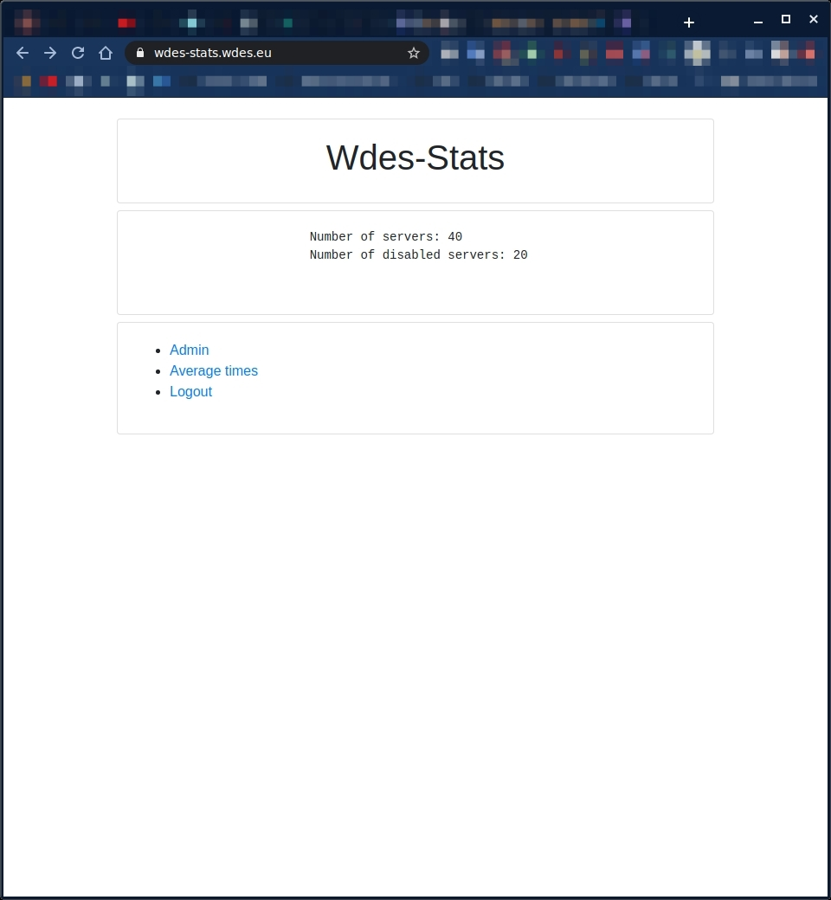
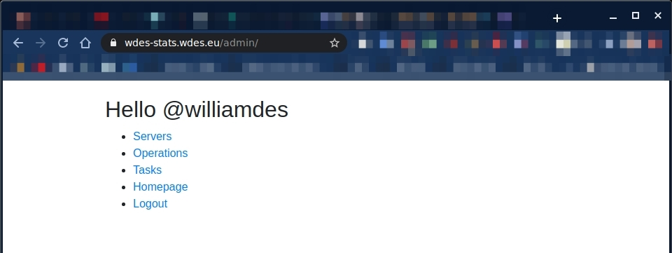
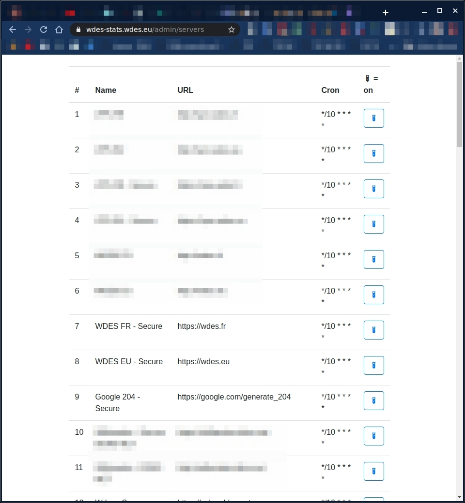
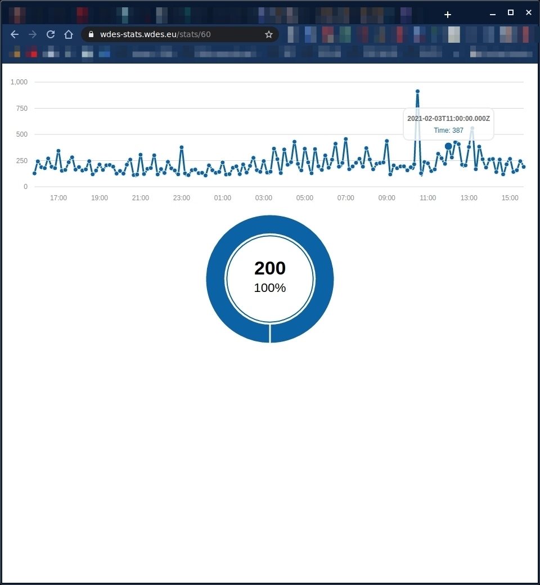
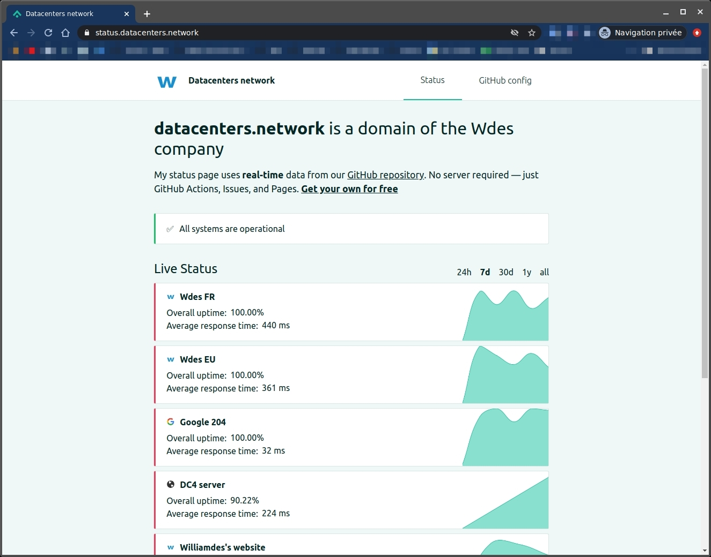
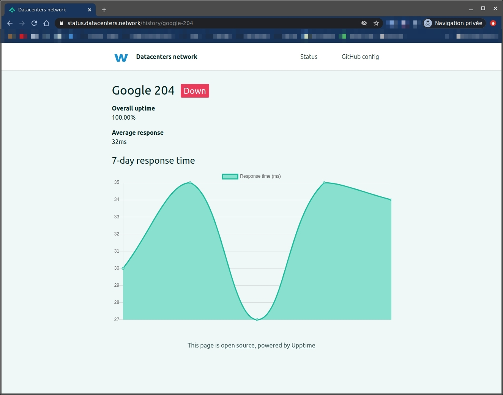

Here is the story of why I did move from my custom made Heroku/Node/TypeScript stats service to upptime.
Some story
Since 2018 I have been using and maintaining my service to monitor my different websites. My first deploy was on July 2018 and the last one in February 2021, since 2018 I have been maintaining and improving the service. I flushed the data once and since 2019-02-01 it has been collecting status codes and response times. Actually 1571311 * 2 rows of data, no downtime. Thank you Heroku !
Conclusion: this service I built worked quite well and was ugly. I did receive sms notifications when things got up or down. I am moving to upptime because it is free, open-source and maintained. And has a very cool UI !
Technical side
You can find the source code: here
I used TypeScript over NodeJS with Sequelize as an ORM and migration system. Also used node-cron to make my scheduling work and twig for my templates. And for API docs I used the apidoc package that works great.
I was quite pleased about this project and the modules I used, very rarely had bugs.
Hacky side
I had to prevent the Dyno from sleeping by feeding it requests every 5 minutes using Uptime Robot. It is a great tool and I recommend it but having paid features was not for me, so I only kept one for the dyno and built the wdes-stats service.
Costs side
Total project costs: 0$, 31 months of free Dyno time. Databases for free too.
Backups
What are you talking about ?? ^^. More seriously I designed a backup button but I never could work because pulling all the data (1.5M rows)was complex on a Dyno and the buffer was quite large and could not handle to keep the data in memory to send it to be my email. Conclusion: it works on my workstation, not in production.
Screenshots of the old service
The homepage

The admin welcome
(After a GitHub login)

The servers list
(with a enable/disable button)

A time stats page
(with a pie chart of the status codes)

Mirating to the new service
I did follow the manual and that was it ! Here it is: https://status.datacenters.network/
(did I choose to keep the watermarks, absolutely !)
Screenshots
The homepage

A time stats page
(yes, it says it is down and I do not know why for now this is because if you use a custom commit template you can break the parsing, see the issue for that: here)
